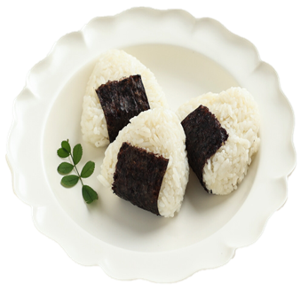

Onigiri
Onigiri is a delicious Japanese rice ball or triangle with filling. It is prepared by cooking the sushi rice and seasoning it with salt. Then, it is molded into a triangle or ball shape, and a filling can be added in the center. It is a popular and convenient snack in Japan
Ingredients
- Sushi rice
- Water
- Salt
- Salmon
- Tuna
- Umeboshi
- Sakebushi
Dish preparation
Cook the sushi rice according to the package instructions and let it cool slightly. Moisten your hands with water and sprinkle some salt on them. Take a portion of rice and make a small indentation in the center. Place the filling in the indentation and cover it with more rice. Press and shape the rice into a triangle or ball. Repeat the process with the remaining rice and filling. Your onigiri is ready to eat!
Choripan Argentinian Style

Ingredients
- 1 lb Argentinian Chorizo
- 1-2 french baguette(s), cut into chorizo length pieces
- 1 tbsp olive oil
- 1 cup chimichurri
Step 1 Light grill and set up for direct medium high heat.
Step 2 While the grill is preheating, mix together the tomato, onion, olive oil, vinegar, and salt. Set aside at room temperature.
Step 3 Place the chorizo on the grill over direct heat, turning them often in order to get a nice char on the outside. Then, remove from the grill.
Step 4 Butterfly the chorizo by making a cut running the length of the link. Then spread the link open, exposing the inside of the sausage. Slice the baguette pieces open like a hot dog bun, and drizzle the inside of the bread with olive oil.
Step 5 Place the chorizo and bread cut side down on the grill. Char the inside of the chorizo and lightly brown the bread. Flip the chorizo and dress with some chimichurri while they finish cooking.
Step 6 Remove the bread and chorizo from the grill, and assemble sandwiches with chimichurri, and salsa. Serve hot.
Asian Ramen

Ingredients
- 2 chicken breasts (boneless, skin-on)
- 1 Tbsp unsalted butter
- 3 Tbsp low-sodium soy sauce
- 4 cups rich chicken stock
- 1 oz dried shitake mushrooms
- 2 large eggs
- 2 (3 oz) packs dried ramen noodles
Heat the oil in a large pot over medium heat until shimmering. Add the garlic and ginger, and cook for a few minutes until softened. Add the soy sauce and mirin, and stir to combine. Cook for another minute.
Add the stock, cover, and bring to a boil. Remove the lid, and let simmer uncovered for 5 minutes, then add the dried mushrooms. Simmer gently for another 10 minutes, and season with salt, to taste
Fill a pot with enough water to cover the eggs, and bring to a boil. Gently lower the eggs (still cold from the fridge) into the boiling water, and let simmer for 7 minutes (for a slightly-runny yolk) or 8 minutes (for a soft, but set-up yolk).
Meanwhile, fill a large bowl with ice water. When the timer finishes, transfer the eggs to the ice bath to stop the cooking process. Wait at least 5 minutes, or until cool enough to handle, then carefully peel away the shell and slice in half, lengthwise. Set aside until ready to serve.
Meanwhile, chop the scallions and jalapeño (if using). Slice the chicken into thin pieces. Set aside. When the eggs finish cooking, add the ramen noodles to the boiling water.
Cook for 2-3 minutes, until soft, then divide the noodles into two large bowls. Add the sliced chicken and the ramen broth. Top with the fresh scallions, jalapeño, and the soft boiled egg. Serve immediately. Enjoy!!